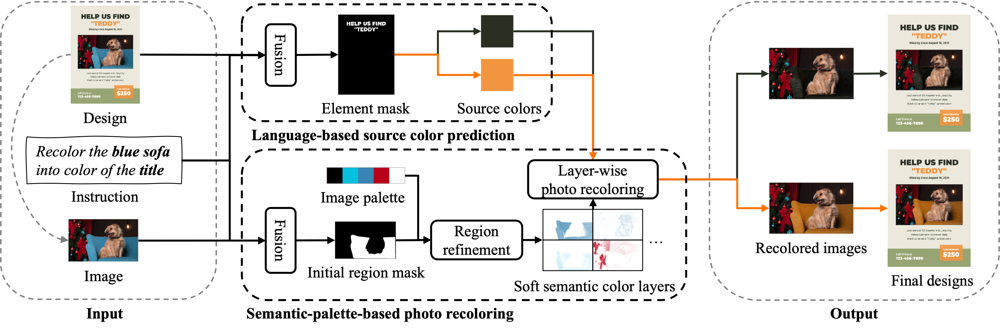
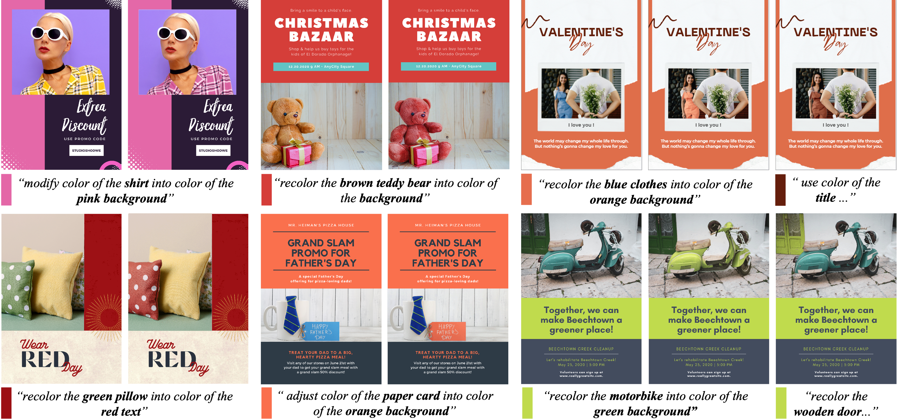
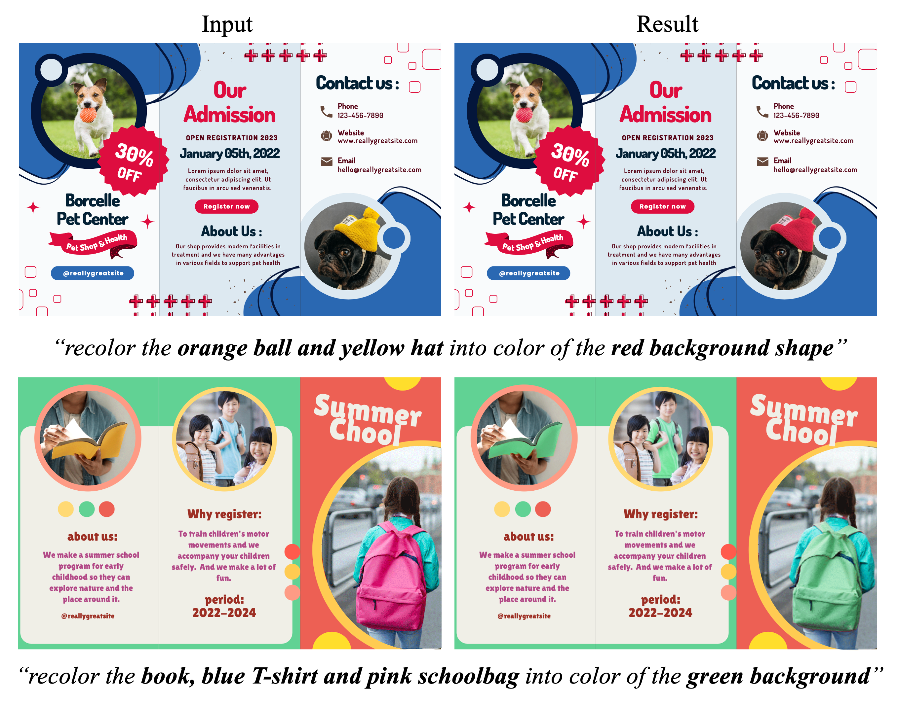

Language-based Photo Color Adjustment for Graphic Designs ACM Trans. on Graphics (Proc. ACM SIGGRAPH 2023), August 2023
- Zhenwei Wang 1*
- Nanxuan Zhao 2* ,
- Gerhard Hancke 1
- Rynson W.H. Lau 1† 1: City University of Hong Kong, Hong Kong SAR, China 2: Adobe Research, California, USA *: Both authors contributed equally to this research †: Corresponding author
Abstract
Adjusting the photo color to associate with some design elements is an essential way for a graphic design to effectively deliver its message and make it aesthetically pleasing. However, existing tools and previous works face a dilemma between the ease of use and level of expressiveness. To this end, we introduce an interactive language-based approach for photo recoloring, which provides an intuitive system that can assist both experts and novices on graphic design. Given a graphic design containing a photo that needs to be recolored, our model can predict the source colors and the target regions, and then recolor the target regions with the source colors based on the given language-based instruction. The multi-granularity of the instruction allows diverse user intentions. The proposed novel task faces several unique challenges, including: 1) color accuracy for recoloring with exactly the same color from the target design element as specified by the user; 2) multi-granularity instructions for parsing instructions correctly to generate a specific result or multiple plausible ones; and 3) locality for recoloring in semantically meaningful local regions to preserve original image semantics. To address these challenges, we propose a model called LangRecol with two main components: the language-based source color prediction module and the semantic-palette-based photo recoloring module. We also introduce an approach for generating a synthetic graphic design dataset with instructions to enable model training. We evaluate our model via extensive experiments and user studies. We also discuss several practical applications, showing the effectiveness and practicality of our approach.
Method
Overview of our pipeline. There are two key components in our pipeline: (1) language-based source color prediction aims to predict the source colors from the user-specified design elements (i.e., “title”); (2) semantic-palette-based photo recoloring aims to recolor the user-specified local regions (i.e., “blue sofa”) in the photo with the predicted source colors.
Results
Our language-based photo recoloring results on graphic designs. For each design case, we show the original design on the left and our result(s) on the right, with the predicted source color and the input instruction below. We highlight the words related to the source colors and target regions in bold.

Comparison results with state-of-the-art methods. We compare with two language-based image recoloring methods: Open-edit [Liu et al. 2020] and ManiGAN [Li et al. 2020b]; and a graphic design photo recoloring method GDRecolor [Zhao et al. 2021].
Applications
1. Design template pairing

Design template pairing. Our model can adjust photo color based on a set of design templates for quick brainstorm and authoring.
2. Brochure Photo Recoloring
Brochure Photo Recoloring. Our model can recolor multiple photos with a single design.
3. Recoloring a design collection
Recoloring a design collection. We show a design case for banners used in online promotion.
4. Iterative graphic design photo recoloring

Citation
Acknowledgements
We thank the anonymous reviewers for the insightful comments and constructive suggestions on our paper. This work is in part supported by a GRF grant from the Research Grants Council of Hong Kong (Ref. No.: 11205620).